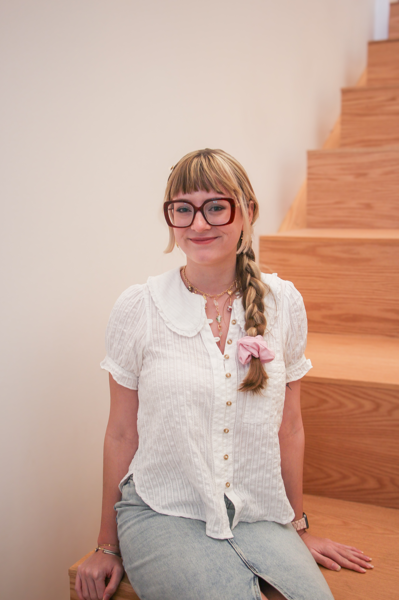

Abbie Ahlbrandt
About

Hello, my name is Abbie Ahlbrandt! I'm a current student at the University of Arkansas, with a major in Graphic Design and minors in Art History and Communication. I am a passionate graphic designer seeking to make impactful work and sustainable designs. Challenging social norms and breaking the mold are strategies I plan to implement into my work. I love to work with different mediums and try new things. Although my craft is mostly digital, I strive to create with physical media in my personal practice. I look forward to strengthening my skills and experiences through continuing my education.
I was born and raised in Tennessee, so I spend most of my time traveling between my home state and Arkansas. I love to travel to new places though, and try new things. When I'm not in school or making art, I'm usually spending time with my friends, reading, or volunteering.